The Navigation System provides agent switching and routing capabilities within the agent-swarm-kit framework. It enables dynamic transitions between agents in a swarm, maintains navigation history, and integrates with tool execution to facilitate complex multi-agent workflows.
This document covers agent navigation functions, navigation templates for tool creation, and the integration points with swarm management and session handling. For information about swarm orchestration and agent lifecycle, see Swarm Management. For session coordination and resource tracking, see Session Management.
The navigation system provides three primary functions for agent transitions, each handling different navigation scenarios with validation, queuing, and resource management.
| Function | Purpose | Usage Pattern |
|---|---|---|
changeToAgent |
Switch to specific agent | Direct navigation with agent name |
changeToDefaultAgent |
Switch to swarm's default agent | Return to triage/main agent |
changeToPrevAgent |
Switch to previous agent in stack | Navigate back in history |

All navigation functions follow a consistent implementation pattern with memoized, queued execution to prevent race conditions and ensure proper resource cleanup.

The template system provides factory functions for creating navigation handlers with customizable behavior, tool output, and execution patterns.

The navigation templates support extensive configuration for different use cases:
| Parameter | Type | Purpose |
|---|---|---|
beforeNavigate |
Callback | Pre-navigation hook |
lastMessage |
Function/String | Message formatter for context |
toolOutput |
Function/String | Tool response content |
executeMessage |
Function/String | Execution message content |
emitMessage |
Function/String | Emission message content |
flushMessage |
Function/String | Fallback flush message |
The alias system provides convenient functions for creating navigation tools that can be added to agents, enabling tool-based navigation triggers.

Navigation tools are registered in both the tool schema service and navigation schema service:

The navigation system integrates deeply with other framework components, providing navigation capabilities across different execution contexts.
Navigation integrates with pipeline execution through agent switching during pipeline runs:

The chat system maintains agent context through navigation:

Navigation triggers history lifecycle events, ensuring proper cleanup and initialization:

The navigation system includes validation mechanisms to prevent circular navigation and ensure proper agent transitions.

Navigation ensures proper resource cleanup through garbage collection and dispose patterns:
